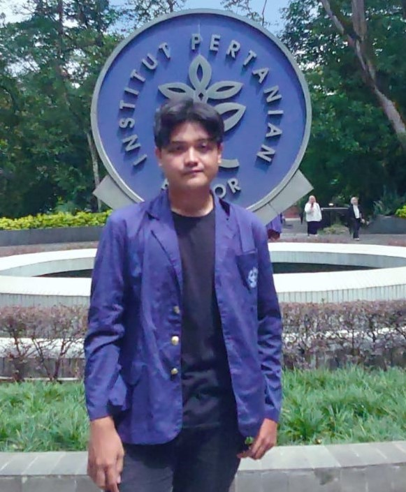

MUHAMMAD FADLAN NURHADI

kerjafadlan@gmail.com | +62 838-7894-7822 |
www.linkedin.com/in/muhammad-fadlan-nurhadi
| Parung Panjang, Bogor, West Jawa, Indonesia
Summary
Undergraduate student in 4th year student at IPB University, Department of Biology, Faculty of Mathematics and
Natural Science. Have an interest in the field of biotechnology in genetic engineering of plants and animals. Able
to operate several data processing and analysis software and has leadership qualities in leading organizations.
This is evidenced by the award as vice chairman of the 2nd Biology Professional Association of IPB University
and has served as chairman of the Class Consultative Assembly.
Organizational Experience
Research Assistant of BeeCON IPB-MNHN - Belitung, Indonesia
MUSEUM NATIONAL D'HISTOIRE NATURELLE (MNHN)
Apr 2024 - Aug 2024
- Help documentary of each harvesting honey activity and inventarization of
plants in Belitung
- Harvested honey with a total of ±15 beehives in a total of 1 month of research
- Carry out plant inventory by making a herbarium, grouping plants used as nyamu for harvesting honey, and
grouping plants for bees
- Carry out plant inventory by making a herbarium, grouping plants used as nyamu for harvesting honey, and
grouping plants for bees
Bee Monitoring and Management Intern - Bogor, Indonesia
PT ONESTA SEMESTA NUSANTARA
Sep 2024 - Oct 2024
- Carry out routine control and monitoring of bee colonies to monitor bee
health and activity. The result was that 21 Heterotrigona itama bee colonies experienced an increase in
honey pots
- Make sure the hive environment is clean and conducive to the health of bees, including varrhoa pests.
The result was that none of the ±15 Apis cerana colonies escaped
- Measure and monitor temperature, humidity, and other factors that influence colony health.
- Make regular reports on nest environmental conditions and provide recommendations based on the data
obtained.
Staff of Logistics Biology Quick Start Competition IPB - Bogor, Indonesia
Himpunan Mahasiswa Biologi IPB (HIMABIO IPB)
Mar 2023 - Oct 2023
- Providing logistic needs
- Provide spreadsheets of the event division's goods needs ranging from heavy logistics to light logistics
- Help provide event consumption for the committee, invited guests, and participants
Vice President Bioversary
Himpunan Mahasiswa Biologi IPB (HIMABIO IPB)
Mar 2023 - Nov 2023
- Plan the entire timeline from start to finish with BPH
- Replace the chairman's position when absent, such as coordinating all divisions when the chairman is
at a competition. Results obtained on the day of the event the activities went smoothly
- Discussing all division tasks with the event team
Volunteer of Nusa Educator Foundation - Bogor, Indonesia
Nusa Educator Foundation
Oct 2023 - Present
- Teaching children the Qur'an and educating them about science and
technology
- Helping to make water pipes for community use
Vice President 2 HIMABIO IPB - Bogor, Indonesia
Himpunan Mahasiswa Biologi IPB (HIMABIO IPB)
Des 2022 - Des 2023
- Maintain the internalization of the association by running the work program and working with the
succulent division
- Became the steering committee for the spore and succulent divisions to maintain internalization and
monitoring of the divisions
- Fill in for the chairperson when absent, such as filling in for the chairperson when he cannot attend a
division meeting
Public Relations Staff of IPB National Science Festival - Bogor,
Indonesia
Badan Eksekutif Mahasiswa FMIPA IPB (BEM FMIPA)
Apr 2022 - Nov 2022
- Invited high school / equivalent schools to participate in the competition and the registration results
exceeded the target from 1700 schools to 2500 schools that registered
- Became a Liaison Officer (LO) for guest lecturers who helped to direct to the venue and assist all
lecturers' needs.
- Became the school's contact person with the committee so as to reduce misinformation
Application of Biology for Community (ABIOTIC) Public Relations
Staff - Bogor, Indonesia
Himpunan Mahasiswa Biologi IPB (HIMABIO IPB)
Mar 2022 - Sept 2022
- Providing logistic needs
- Provide spreadsheets of the event division's goods needs ranging from heavy logistics to light logistics
- Help provide event consumption for the committee, invited guests, and participants
Head of Logistics Bioversary - Bogor, Indonesia
Himpunan Mahasiswa Biologi IPB (HIMABIO IPB)
Mar 2022 - Oct 2022
- Reduce expenses by using used items for decoration that can be recycled
- Looking for cheap but high quality materials to reduce expenses
- Provide refreshments for the committee and lecturers during the event
- Lead the mobilization of the committee to the event venue
Education
Bachelor of Agriculture in Biology Department,
Faculty of Mathematics and Natural Science, IPB University (2021 - 2025)
Last GPA: 3.47 / 4.00
Achievements
- 3rd Place in Solo Vocal KIP-K GOT TALENT IPB 2023
- 3rd place in Mobile Legends GOL FMIPA IPB National 2023
- 2nd place in Vocal Group Spirit FMIPA IPB 2023
- Semifinalist of LCTB IPB 2019
- UIN 2019 LCTB Semifinalist
- STEM IPB 2020 Finalist
- National Science Competition 2020 Participant
Skills
- Technical Skills
- Scientific Writing
- Extract DNA
- Laboratory Skills
- Elektroforesis
- Extract DNA
- Software Skills
- Microsoft Office (Word, Excel,
Power Point)
- Canva
- R Studio
- Web Development (Wordpress, HTML, CSS, JavaScript)
- Soft Skills
- Web Development
- Fullstack Developer
- Blockchain
- Fast Learner
- Professional Communication
- International Communication (English)
- Project Management
- Risk Management
- Problem Solving